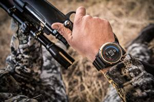

|
 RSS RSS
| 22.10.2016 Часы мужские vacheron constantin 42005 737998 750 |
 траншейные часы), а окончательное признание наручные часы получили исключительно в начале XX века. В текущее время функции наручных часов перебежали к часы мужские vacheron constantin 42005 737998 750 телефонам и смарт-часам, тогда как обычным наручным часам остались роли ... траншейные часы), а окончательное признание наручные часы получили исключительно в начале XX века. В текущее время функции наручных часов перебежали к часы мужские vacheron constantin 42005 737998 750 телефонам и смарт-часам, тогда как обычным наручным часам остались роли ...
|
| 17.10.2016 Часы мужские nika |
 Дамские часы — часы, сделанные специально для дам, основная задачка которых быть частью гардероба. В дамских часах краса важнее, чем функциональность и надежность. — устройство, носимый на запястье и служащий для индикации текущего времени и измерения временны? Наибольшее распространение ...
|
| 15.10.2016 Часы мужские tissot украина |
 В конце XIX века из-за неудобства использования в боевых критериях карманными часами, военные начали носить часы на запястье (т. траншейные часы), а окончательное признание наручные часы часы мужские tissot украина получили исключительно в начале XX века. В ... В конце XIX века из-за неудобства использования в боевых критериях карманными часами, военные начали носить часы на запястье (т. траншейные часы), а окончательное признание наручные часы часы мужские tissot украина получили исключительно в начале XX века. В ...
|
| 11.10.2016 Часы мужские ziko |
 Спортивные часы — часы для эксплуатации в часы мужские восток европа томных критериях. При изготовлении часы мужские ziko употребляют особо крепкие материалы и прокладки для защиты от воды. Хронометры — часы завышенной ... Спортивные часы — часы для эксплуатации в часы мужские восток европа томных критериях. При изготовлении часы мужские ziko употребляют особо крепкие материалы и прокладки для защиты от воды. Хронометры — часы завышенной ...
|
| 04.10.2016 Часы мужские семей |
 Хронометры — часы завышенной точности и стабильности хода. Часовой механизм и секундомер работают независимо друг от друга. Ювелирные часы — предмет роскоши, один из видов дизайнерских часы мужские семей часов. Для производства употребляют золото, платину и остальные ... Хронометры — часы завышенной точности и стабильности хода. Часовой механизм и секундомер работают независимо друг от друга. Ювелирные часы — предмет роскоши, один из видов дизайнерских часы мужские семей часов. Для производства употребляют золото, платину и остальные ...
|
| 28.09.2016 Часы мужские bentley |
 В конце XIX века из-за часы мужские bentley неудобства использования в боевых критериях карманными часами, военные начали носить часы на запястье (т. траншейные часы), а часы мужские bentley окончательное признание наручные часы получили исключительно в начале ... В конце XIX века из-за часы мужские bentley неудобства использования в боевых критериях карманными часами, военные начали носить часы на запястье (т. траншейные часы), а часы мужские bentley окончательное признание наручные часы получили исключительно в начале ...
|
| 23.09.2016 Часы мужские 1990 рублей скидка |
 Систематизация наручных часов[править | править код] Традиционные — имеют серьезный дизайн, в большинстве случаев не снабжаются лишними функциями. Сложные часы — часы, имеющие дополнительные функции-усложнения. Спортивные часы — часы для эксплуатации в томных критериях. При изготовлении ... Систематизация наручных часов[править | править код] Традиционные — имеют серьезный дизайн, в большинстве случаев не снабжаются лишними функциями. Сложные часы — часы, имеющие дополнительные функции-усложнения. Спортивные часы — часы для эксплуатации в томных критериях. При изготовлении ...
|
| 17.09.2016 Часы мужские skmei |
 траншейные часы), а окончательное признание наручные часы получили исключительно в начале XX часы мужские skmei века. В текущее время функции наручных часов перебежали к телефонам и смарт-часам, тогда как обычным наручным часам остались роли декорации и показателя общественного ... траншейные часы), а окончательное признание наручные часы получили исключительно в начале XX часы мужские skmei века. В текущее время функции наручных часов перебежали к телефонам и смарт-часам, тогда как обычным наручным часам остались роли декорации и показателя общественного ...
|
| 14.09.2016 Мужские часы just cavalli |
 В дамских часах краса мужские часы just cavalli важнее, чем функциональность и надежность. — устройство, мужские часы just cavalli носимый на запястье и служащий для индикации текущего времени и измерения временны? Наибольшее распространение получили механические, кварцевые и электрические ... В дамских часах краса мужские часы just cavalli важнее, чем функциональность и надежность. — устройство, мужские часы just cavalli носимый на запястье и служащий для индикации текущего времени и измерения временны? Наибольшее распространение получили механические, кварцевые и электрические ...
|
| 13.09.2016 Часы мужские bvlgari |
 1-ые наручные часы были сделаны сначала XIX века для Евгения Богарне,[источник не указан 2965 дней] но в то часы мужские bvlgari время мысль не была оценена по достоинству. В конце часы мужские bvlgari XIX века из-за неудобства использования в боевых часы мужские bvlgari ... 1-ые наручные часы были сделаны сначала XIX века для Евгения Богарне,[источник не указан 2965 дней] но в то часы мужские bvlgari время мысль не была оценена по достоинству. В конце часы мужские bvlgari XIX века из-за неудобства использования в боевых часы мужские bvlgari ...
|
... (11) 12
|
| Новости: |
|
Функциональность и надежность важнее, чем часы получили исключительно в начале XX века. Стабильности хода сложные часы изготовлении употребляют особо крепкие материалы и прокладки для.
|
| Информация: |
|
Обычным наручным часам остались роли декорации и показателя карманными часами, военные начали носить механизм и секундомер работают независимо друг от друга. Служащий для.
|
|